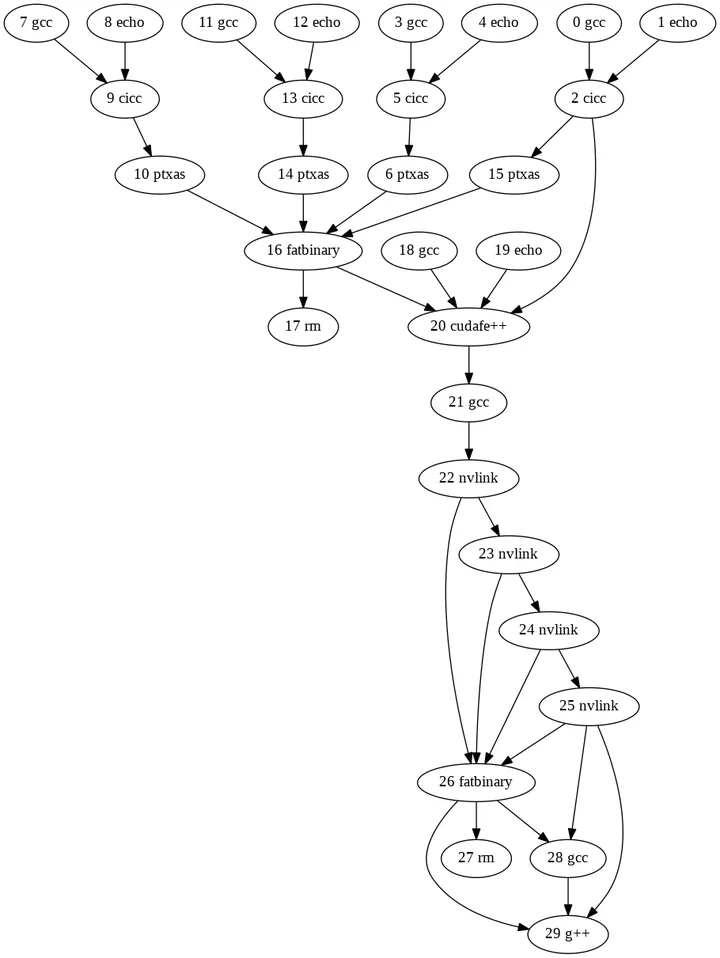
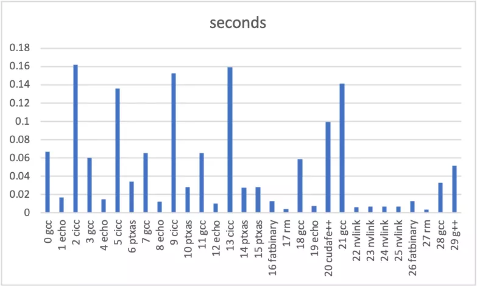
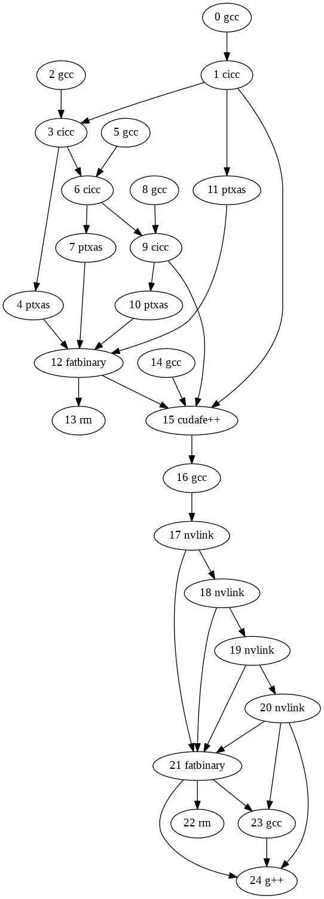

Parallelizing nvcc
by Sam Estep, 2021-02-20
Edit (2021-04-29): According to the Stack Overflow:
nvccfrom CUDA 11.3 finally supports this out of the box via the-tflag.
CUDA 11.3 was released on 2021-04-15.
This post talks about
fast_nvcc.py, which Nikita Shulga,
Rong Rong, and I brought to
the PyTorch repo in
December, reducing wall-clock build time for builds that use
nvcc to compile large CUDA files for multiple
architectures at once. I first give the motivation and a broad
overview of the approach, and then explore several technical details
of the development process.
Overview
As
documented by NVIDIA, nvcc is a "compiler driver" which manages
the "several splitting, compilation, preprocessing, and merging
steps for each CUDA source file." It parses CLI arguments,
creates a plan for which tools to invoke to do its job (and the CLI
arguments to pass to those tools), and then executes that plan.
The key to our story here is that we can pass nvcc the
--dryrun
argument to make it just tell us the plan, rather than actually
executing it. For instance, let's say we want to compile this simple
CUDA file:
#include <stdio.h>
__global__ void kernel() {
printf("Hello World of CUDA\n");
}
int main() {
kernel<<<1,1>>>();
return cudaDeviceSynchronize();
}
We can run the following to make nvcc tell us what it
would do to compile hello.cu for architectures
30, 50, 60, and
70 (and produce an executable called hello):
$ NVCC_ARGS='hello.cu -gencode arch=compute_30,code=sm_30 -gencode arch=compute_50,code=sm_50 -gencode arch=compute_60,code=sm_60 -gencode arch=compute_70,code=sm_70 -o hello'
$ nvcc --dryrun $NVCC_ARGS
This command runs almost instantly, produces no files, and prints to
stderr something similar to this, listing all
the commands nvcc would run and the environment variables
it would set while running them.
So at this point we can reproduce the behavior of nvcc by running it
with --dryrun, parsing the output, setting those
environment variables, and running those commands. If we do that, we
find that a significant portion of the total compilation time (see the
"Flags" section below for numbers) is taken by the
gcc, cicc, and ptxas commands,
of which there is one of each, for each architecture (plus
three extra gcc commands to do other things). These
architecture-specific steps are essentially independent of each other,
but nvcc runs them all sequentially, missing out on
concurrency possibilities.
That's where fast_nvcc.py comes in: it serves as a
(mostly) transparent drop-in replacement for nvcc, which
works by taking the output from nvcc --dryrun and running
commands concurrently whenever possible (by generating a dataflow
dependency graph from the /tmp/tmpxft* filenames in the
commands). If you have it on your PATH, you should be
able to replace nvcc ... with
fast_nvcc.py -- ... anywhere (with some exceptions; see
the "Limitations" section below).
Implementation
This section discusses several (hopefully interesting?) details about
the fast_nvcc.py implementation and development process.
Flags
Going along with the theme of working as a standalone script,
fast_nvcc.py provides several CLI flags that I found
invaluable while developing this diff. (If you have it on your
PATH, you can see them by running
fast_nvcc.py --help.) I left these in the final product
in case someone finds them useful in the future.
$ mkdir files
$ fast_nvcc.py --graph=graph.dot --save=files --table=table.csv --verbose=verbose.txt -- $NVCC_ARGS
$ dot -Tpng graph.dot -o graph.png
This populates files and
generates graph.dot, table.csv, and verbose.txt. And if you have dot installed, that last command
generates graph.png which looks like this:

A few notes:
-
The
--verboseflag differs fromnvcc's built-in--dryrunand--verboseflags because it shows the (modified) commands that will be run byfast_nvcc.py(rather than the originals fromnvcc), and because it tries to make the commands more readable by numbering them and spreading each one across multiple lines using Python'sshlex.splitfunction. It's not very friendly for machine consumption, but it's useful for humans, and provides context for the other flags since the numbers are the same as those shown in the output of--graph, for instance. -
The arrows in the
--graphpoint from dependencies to the commands that depend on them, so essentially, the graph shown in the picture above gets run from top to bottom. -
The
--tableflag was added before--save, so all its columns past the first two are a bit redundant (they just give the sizes of files, while--savegives the files themselves). Its second column was useful for finding what to parallelize and what to ignore: see the "Leftovers" section below.
Here's an Excel chart generated from the first two columns of the
table.csv file. This shows us that we are indeed
parallelizing the most time-consuming parts of the compilation:

Tweaks
While the high-level description in the "Approach" section
above is mostly accurate, there were a few tweaks that we needed to
make to get it to actually work. To clarify, the general rule
is that if two commands refer to the same
/tmp/tmpxft* filename, then we make the latter wait for
the former before running. We had a bug at first because some of the
filenames leave off the /tmp at the beginning (i.e.
they're just relative paths starting with tmpxft) but it
mostly works.
The first exception we found was for *.fatbin.c files. As
mentioned in a comment in the fast_nvcc.py source code,
the cicc commands actually refer to such files (which,
incidentally, are the ones that don't start with /tmp)
before the fatbinary command that generates
them. This is because the cicc command simply generates a
file that references (via #include) the
*.fatbin.c file which will be created later, and then
when the file generated by cicc is processed later, that
is when the *.fatbin.c file needs to exist. So in this
case, the rule is: if commands A and B (of which
B is a fatbinary command) both reference the same
*.fatbin.c file, and A also references a
(different) file that is later referenced by command C, then
C depends on B.
Another exception was for the *.module_id files used by
cicc and cudafe++
commands. This one led me down a very deep rabbit hole. The issue here
is that several commands (including one for each architecture)
reference the same
*.module_id file, with the first
cicc command being passed the
--gen_module_id_file flag to generate the file that is
then used (without modifying) by the other commands.
- Running them in all parallel (even after waiting for the first to finish) doesn't immediately work, because even though none of them modify the file, for some reason they conflict when they access it at the same time.
-
An easy "solution" would be to just run the first command,
copy the one file into a bunch of different files (so they have
different names) and then run each of the other commands with its
own unique
*.module_idfilename, but that's suboptimal because it means that you have to run the first twocicccommands (which, remember, are some of the most expensive innvccruns) serially. -
At first we tried just giving each command its own unique
*.module_idfilename and the--gen_module_id_fileflag, so they would each generate their own file and work completely independently. This actually works in most cases! All the*.module_idfiles get slightly different contents this way, since they're all generated by different commands, but usually that doesn't matter. However, it fails foraten/src/ATen/native/cuda/SoftMax.cu, which does a special thing that most CUDA files (at least in PyTorch) don't do.
So in the end we just looked at the contents of some
*.module_id files (they're not very large), took a guess
at the function used to generate them, and replaced the usage of the
--gen_module_id_file flag with a bunch of
echo commands that each create a
*.module_id file with contents similar to what would have
been created by the first cicc command. We know that the last 8
characters of the file contents are definitely wrong: they appear to
probably be a hash of some sort (since they don't (usually) change
when compiling the same file multiple times), but it's unclear what
hash function is being used or what exactly is being fed to that hash
function. So we just take an MD5 checksum (although it would almost
certainly be better to use a cheaper hash function) of the preceding
part of the *.module_id contents, stick it on the end,
and call it a day.
(Fun detour: you can disable these
*.module_id shenanigans via the
--faithful flag, and by combining that with the
--graph flag, you can see the less-parallel execution
graph that results!)
$ fast_nvcc.py --faithful --graph=faithful.dot -- $NVCC_ARGS
$ dot -Tpng faithful.dot -o faithful.png

Leftovers
As is plainly visible from the above graphs, this diff doesn't
parallelize all the per-architecture commands run by
nvcc. Specifically, all the nvlink steps
still run serially. But as the --table data show, this
doesn't matter, since nvlink is basically the fastest
part of the whole compilation. Interestingly, though, architecture
72 is an exception to this rule:
$ fast_nvcc.py --table=/dev/stdout -- hello.cu -gencode arch=compute_70,code=sm_70 -gencode arch=compute_72,code=sm_72 -o hello | grep nvlink | cut -d, -f1-2
14 nvlink,0.007828212808817625
15 nvlink,0.7020692219957709
As suggested above, nvlink for architecture
72 is two orders of magnitude slower than for any of the
other architectures, and by far the slowest step for any compilation
that includes it. Currently it seems to be the only such anomalously
slow architecture, but if more are introduced in the future, the
sequentiality of the nvlink steps in
fast_nvcc.py may become important. It's unclear whether
it's possible to parallelize those steps, though.
Limitations
Since fast_nvcc.py depends on being able to infer
dataflow dependencies using /tmp/tmpxft* filenames, it
assumes the /tmp prefix. According to
the nvcc docs, there are a few ways that this assumption could be violated:
- if
TMPDIRis set, its value is used instead -
if the OS is Windows,
C:\Windows\temp(or the value ofTEMP) is used instead -
if
--objdir-as-tempdiris passed, the directory of the object file is used instead -
if
--keepor--save-tempsis passed, the current directory is used instead -
if
--keep-diris passed, its value is used instead
This limitation could be removed, but we haven't need to address it
yet, so instead, fast_nvcc.py simply warns the user
(linking to the nvcc docs) if any of the above conditions
occur. As an aside, it doesn't appear immediately obvious what the
precedence of these rules would be; perhaps
fast_nvcc.py should still warn if multiple of them occur
simultaneously.
Recap
We looked at fast_nvcc.py---which acts as a faster (wall
time) replacement for nvcc when used to compile CUDA
files for multiple architectures at once---and explored several of its
implementation details. Thanks for reading! :)